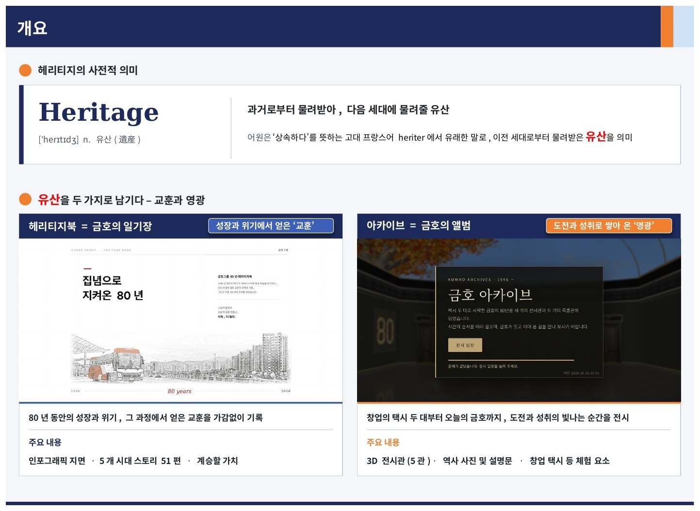
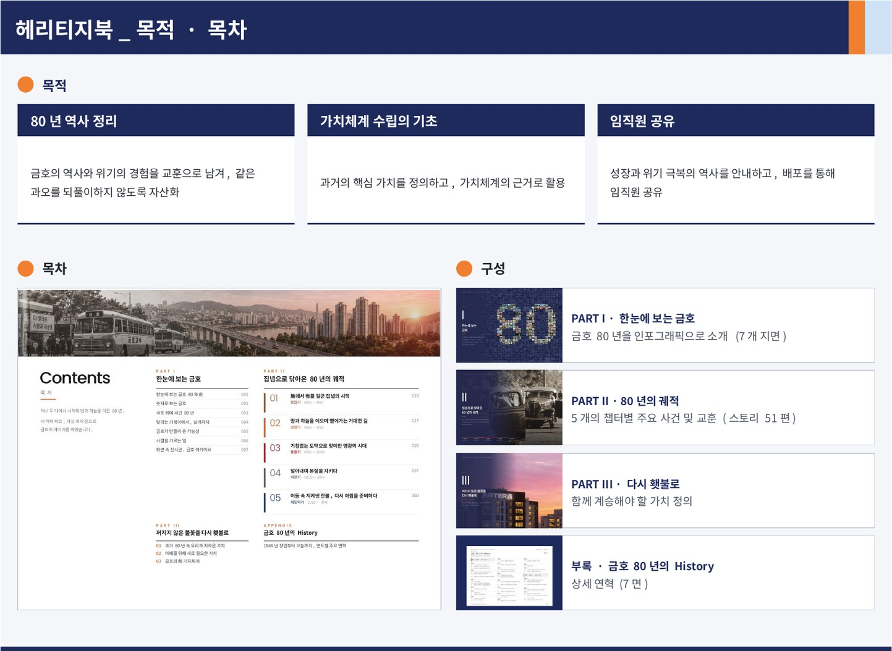
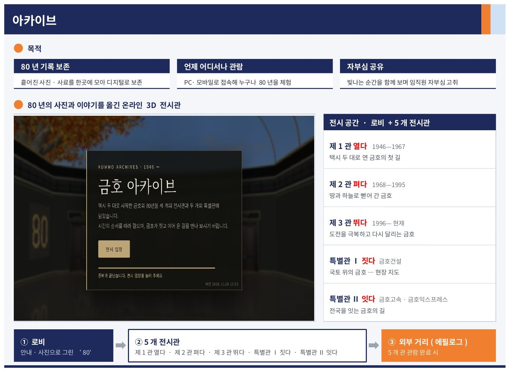
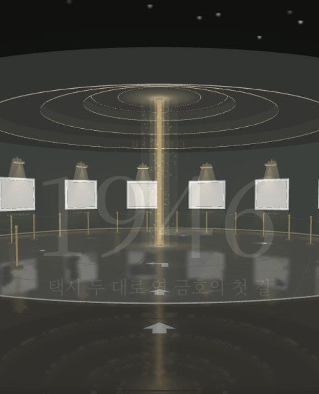

Heritage Book 진행 보고
전체
헤리티지북
아카이브
‹ 이전
1 / 1
다음 ›
‹ 이전
다음 ›


눌러서 넘기기 ›

주요 기능
오른쪽 기능을 누르면 왼쪽에 실제 아카이브 화면이 나옵니다.

자유 이동
1
자유 이동
빈 곳을 클릭하거나 방향키로 전시관 안을 자유롭게 이동
2
사진 검색
입구 모니터에 단어를 넣으면 해당 사진이 차례로 나옵니다
3
자동 관람
사진 앞으로 차례로 이동하며 설명을 보여 줍니다
4
크게 보기
사진을 확대하고 연도·설명을 함께 확인합니다
5
로비 화면
실제 날씨·시간·계절을 천장에 반영
6
창업 택시
1935년형 포드 디럭스를 3D로 재현, 360° 관람